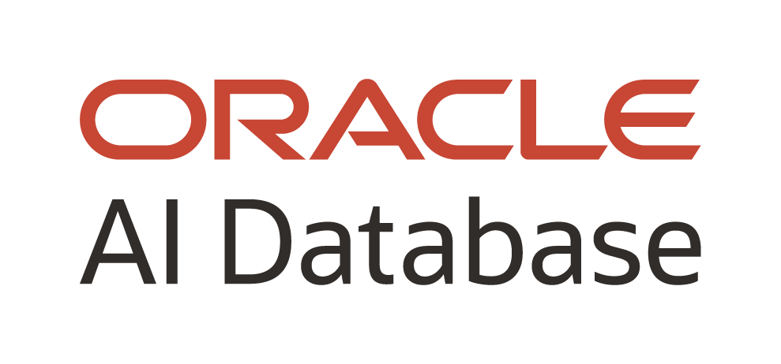
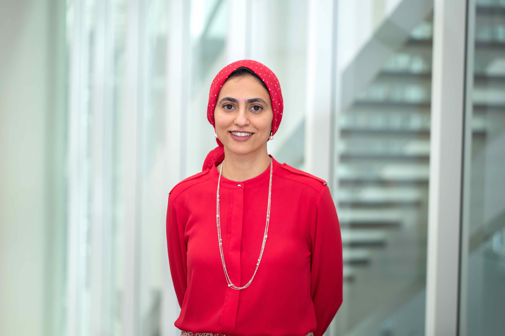

DataEd 2026 Program
We're excited to share our full program with you. Please come to room Auditorium A3 to join us!
DataEd'26 is sponsored by:

| Time | Program | Title and presenter(s) |
| 10:30 | Coffee | EDBT/ICDT provides coffee in the Auditorium Foyer |
| 10:45 | Opening and welcome | Remarks from the DataEd Workshop Chairs. |
| 11:00 | Keynote + Q&A | CSEd keynote: Title to be announced Prof. Craig Zilles, University of Illinois at Urbana-Champaign |
| 11:45 | Paper Session 1 - Data Systems | Paper 1: GRANT Privileges, REVOKE Risk: Safe and Scalable Teaching of Database Administration with Isolated Containers Andrzej Wójtowicz (Adam Mickiewicz University in Poznań), Maciej Prill (Adam Mickiewicz University in Poznań) |
| 12:00 PM | Paper 2: A Collection of Demonstrations with PostgreSQL for Teaching and Learning Database System Internals Stefan Halfpap(TU Berlin), Daniel Hristov (TU Berlin), Volker Markl (TU Berlin) |
|
| 12:15 | Paper 3: SemiStructQuest: Unveiling NoSQL Database Concepts Through Gamified Learning Platform Analyses Nelly Barret (INSA Lyon), Mélina Verger (INSA Lyon) |
|
| 12:30 | Lunch | EDBT/ICDT provides lunch in Tampere Hall (3rd floor) |
| 14:00 | Keynote + Q&A | Data Systems Keynote: Title to be announced Prof. Azza Abouzied, New York University Abu Dhabi |
| 14:45 | Paper Session 2 - Automation | Paper 4: AI-Assisted Generation of SQL Comprehension Questions Martin Goodfellow (University of Strathclyde), Alasdair Lambert (University of Strathclyde), Andrew Fagan (University of Strathclyde), Robbie Booth (University of Strathclyde) |
| 15:00 | Paper 5: A Proposal for Revising SQL Error Taxonomies Based on Automated Detection Davide Ponzini (University of Genoa), Giovanna Guerrini (DIBRIS- University of Genova), Barbara Catania (DIBRIS-University of Genoa) |
|
| 15:15 | Sponsor talk | Oracle AI Database in Education: Free teaching and learning resources to prepare students |
| 15:25 | Coffee break | EDBT/ICDT provides coffee in the Auditorium Foyer |
| 16:00 | Paper session 3 - Modeling | Paper 6: Seasoning Data Modeling Education with GARLIC: A Participatory Co-Design Framework Viktoriia Makovska (Ukrainian Catholic University), Ihor Michurin (Kharkiv National University of Radio Electronics), Mariia Tokhtamysh (Kharkiv National University of Radio Electronics), George Fletcher (Eindhoven University of Technology), Julia Stoyanovich (New York University) |
| 16:15 | Paper 7: Teaching Query-Driven Design in Aggregate-Oriented NoSQL Systems: Resources, Methodology, and Tool Support Barbara Catania (DIBRIS-University of Genoa), Giovanna Guerrini (DIBRIS- University of Genova), Amer Al Khoury (DIBRIS- University of Genova) |
|
| 16:30 | Guided discussion on the future of Data Systems Education | |
| 17:30 | Closing | Remarks from the DataEd Workshop Chairs. |
Keynotes
We're very happy to announce that we will have two keynotes at DataEd 2026! Our speaker from the data systems side will be Azza Abouzied, and from the computer science education side will be Craig Zilles.
Azza Abouzied
Talk title to be announced
Azza Abouzied is an Associate Professor at NYU Abu Dhabi. She designs tools that help users make sense of and take decisions with data. Straddling two research fields, database systems and human computer interaction, she approaches tool-building from an interdisciplinary perspective tackling both scalability and usability challenges. Her earlier work explored example-driven techniques to help users query databases, extract data from documents and generate synthetic data. Recently, her focus has been on in-database support for prescriptive analytics in uncertain environments and examining the challenges of decision-makers in specific applications such as disinformation-mitigation, epidemic-planning, or group-booking, where data is limited or uncertain and collaborative-support is lacking.Craig Zilles
An Efficient, Effective Assessment Strategy for the GenAI Era with a Computer-Based Testing FacilityThe rapid rise in genAI capabilities has been a shock to the educational system. GenAI can trivially do most of the well-specified assessment activities that help our students build basic skills in a domain. Educational theory (e.g., constructivism) suggests that building these basic skills remains important to develop higher-level skills like system architecture and planning. Many instructors are struggling, however, to ensure that their students are learning these basic skills, finding themselves pushed back into in-person paper-based exams and shifting a larger fraction of the student’s grade into a few large assessment, increasing student anxiety. In this talk, I’ll outline a more modern, holistic strategy for assessment, that focuses on a "two-lane" approach, where the student’s fluency of building block skills is assessed without access to AI (lane 1) and students proficiency with using genAI to solve incompletely specified problems is assessed with open-ended projects (lane 2). In the proposed implementation, lane 1 is highly automated through the use of a computer-based testing facility, allowing frequent, small exams with re-take opportunities to ensure mastery of these concepts with low anxiety and almost no effort from the course staff. Automating lane 1 frees up course staff to focus on assisting student learning and lane 2 assessment.
Craig Zilles is a Professor and Severns Faculty Scholar in the Siebel School of Computer and Data Science at the University of Illinois at Urbana-Champaign. His current research focuses on applying computing and data analytics to education, including the development of the Computer-Based Testing Facility (CBTF). Previously, his research focused on the interaction between compilers and computer architecture, and he developed the first algorithm that allowed rendering arbitrary three-dimensional polygonal shapes for haptic interfaces (force-feedback human-computer interfaces). He received the IEEE Education Society's 2010 Mac Van Valkenburg Early Career Teaching Award and an NSF CAREER award. Craig has received a wide range of teaching awards, holds 5 patents and his research has been recognized by best paper awards from ASPLOS in 2010 and 2013.